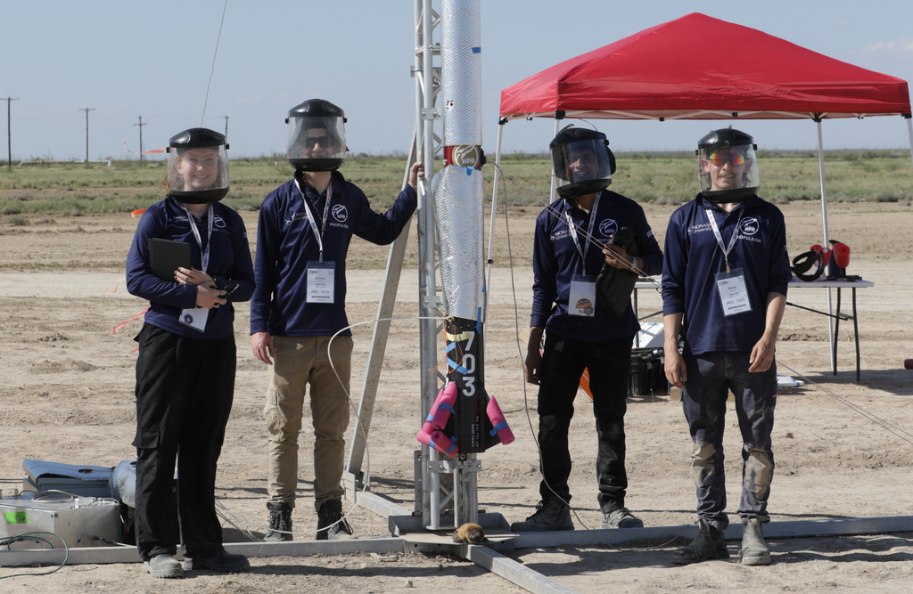
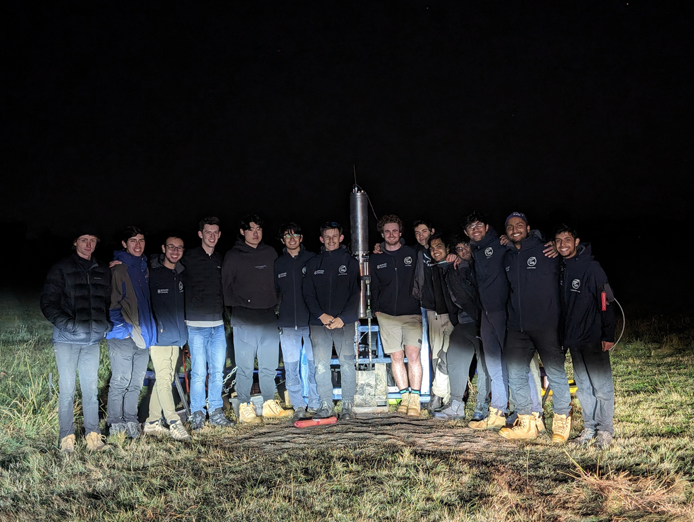
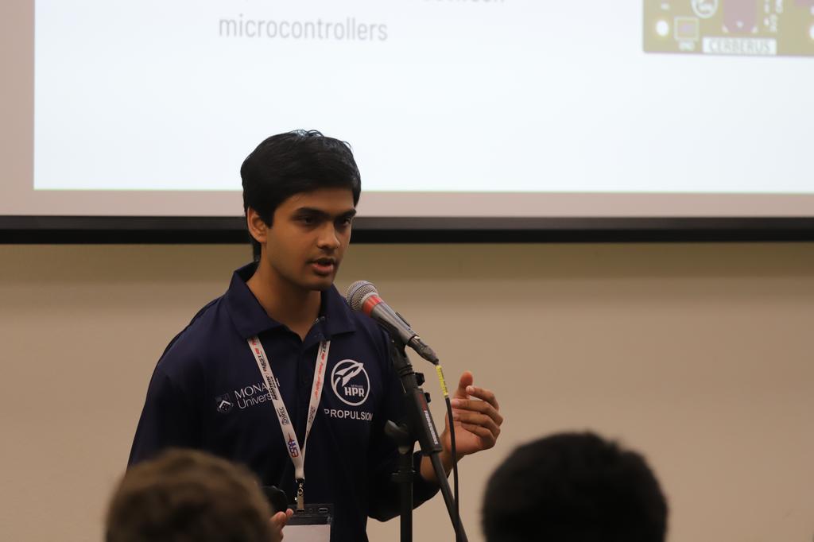

IREC 2025 Pad Ops + Integration Under Pressure
Pre-launch verification, rapid debugging, and operator-gated control under test director supervision.

What I did on-site
- Set up pad-side avionics and ground electrical, connected umbilicals, verified sensors and valves before attempts.
- Operated avionics/control interfaces under test director supervision.
- Troubleshot failures fast (connectors, wiring, comms) to recover attempts.

Rebuild decision as disciplined engineering
Hot-fire testing surfaced compounding electrical issues (intermittent connectors, unreliable pyro channels, inconsistent actuation). I initially pushed incremental fixes due to schedule pressure. A propulsion teammate argued the accumulation signaled deeper risk; after reviewing failure modes together, we aligned on a full rebuild before flight.
I coordinated the overhaul and pulled in 20+ teammates across subsections to execute and re-verify.

Awards and presentation (team outcome)
Co-presented controls/telemetry architecture during the IREC podium session (required for award eligibility). Judges congratulated our presentation and gave a token of recognition.
Team outcome: Jim Furfaro Award for Technical Excellence; 2nd in category.

Podium session presentation.

Recognition from the awards session.